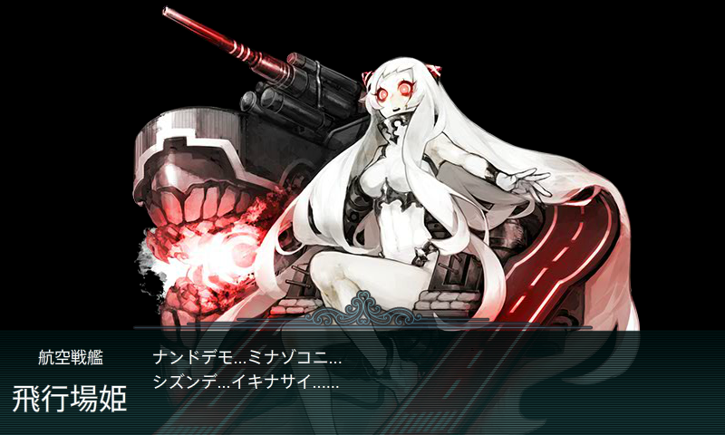
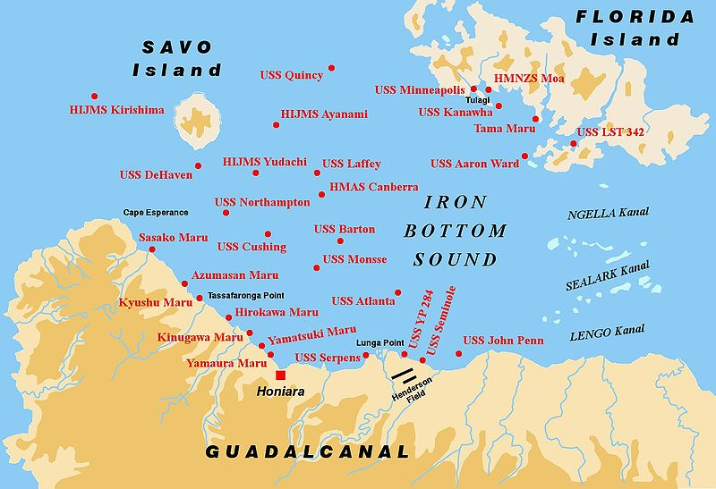
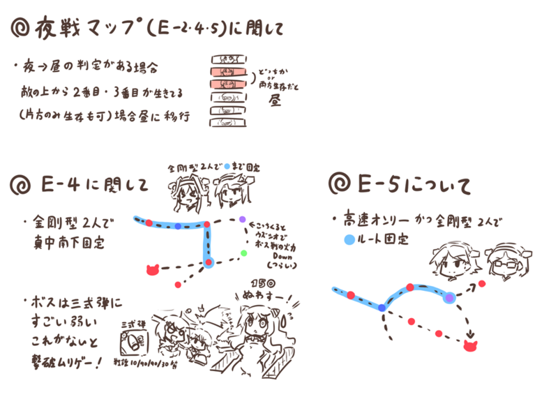
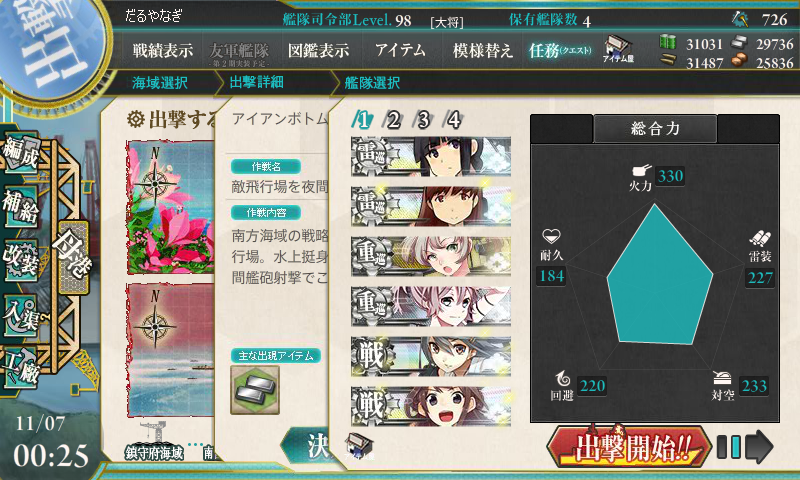
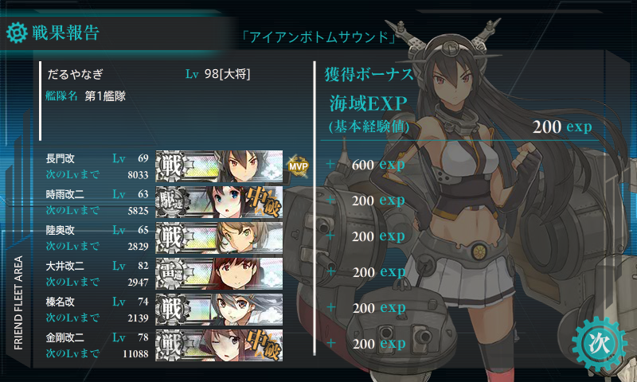
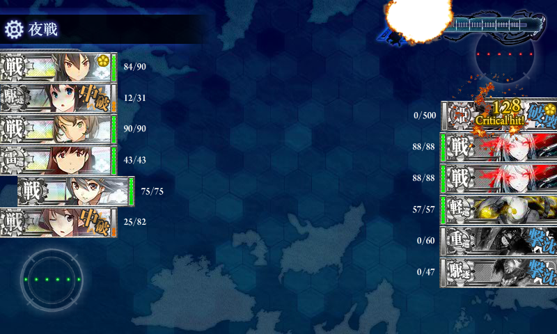
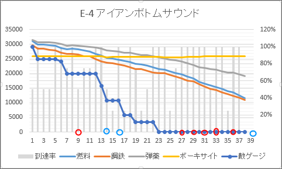

艦これ： アイアンボトムサウンドに屍を晒す。
執筆日時：

最近あんまり寝付けず睡眠不足で、水曜日は会社から帰るなりすぐに寝てしまった。起きると真夜中の1時。というわけで、これはよい機会だと思い「決戦！鉄底海峡を抜けて！」の第四面（E-4）、“アイアンボトムサウンド 敵飛行場を夜間砲撃で叩け！”にチャレンジしてみた。
このところ戦闘は控えて遠征のみを回し、資源確保に努めてきた俺提督。資材は各30kほど溜まっている。クリア想定時間は6時間で、会社に行くまでに十分終わりそう。まさに「時は来たれり！」って感じですな。

ちなみにアイアンボトムサウンド（鉄底海峡）というのはガダルカナル・サボ・フロリダ島に囲まれた海峡（Sound）のことで、あまたの軍艦がここで眠っているのだそうな。艦これ登場艦で言えば、比叡・霧島・龍驤・古鷹・睦月・由良・吹雪・叢雲・綾波・暁・夕立なんかがそれ。比叡（霧島の少し西北方向で戦没）についてはこのブログでも以前触れた。
マップ概要

今回のマップは、その比叡も参加したヘンダーソン飛行場の砲撃がモチーフになっているみたいで、金剛型戦艦（金剛・比叡・榛名・霧島）と対空三式弾がキモになっているみたい。金剛型は全員Lv65～75に育ってるけど、三式弾なんか4つしかないよ……。
編成

最初の出撃は、以上のような編成。途中でいろいろ組み替えているけれど、三式弾装備の重巡×2（削り切った後は長門型戦艦にスイッチ）・金剛型戦艦×2を基本に、駆逐艦・重巡洋艦・重雷装艦を加えた編成にしてみた。とくに高レベルの駆逐艦はコストパフォーマンスがよく、敵ゲージの削りでは
- 鳥海 Lv55：15.5cm三連装砲(副砲)、15.5cm三連装砲(副砲)、三式弾、タービン
- 夕立 Lv60：10cm連装高角砲、10cm連装高角砲、ダメコン
- 時雨 Lv60：10cm連装高角砲、10cm連装高角砲、ダメコン
- 摩耶 Lv55：15.5cm三連装砲(副砲)、15.5cm三連装砲(副砲)、三式弾、ダメコン
- 榛名 Lv70：46cm三連装砲、46cm三連装砲、三式弾、ダメコン
- 金剛 Lv75：46cm三連装砲、46cm三連装砲、三式弾、ダメコン
という編成が燃費・到達率・撃破率のバランスが良好で、個人的に気に入った。陣形もいろいろ試したけれど、単横・単横・単横・単縦が一番よいように感じる……というか、あまり変わらんと思った。

ゲージを削り切ってからは、資源効率無視で長門型戦艦を投入。金剛型のダメコンは外してタービンに換装し、中破なら BOSS 進軍とした。残り2艦は戦意高揚（キラキラ）状態の艦を適当にチョイス。
戦闘経過

40戦でクリア。やっぱり榛名さんは女神やで！！

赤丸は“お仕置き部屋”、青丸はボス撃破。削り切ってからやたらお仕置き部屋に送り込まれて禿た。
艦の疲労を回復するために出撃頻度を1回/15分に抑えていたので、一時間に出撃できる回数は4回。38回出撃で10時間かかった計算になる。決して運はよくないが、まぁ、極端に悪いとも言えない結果だと思う。
もし三式弾（や46cm砲、15.5cm副砲）がたくさんそろっていれば、もうワンセット艦隊を編成してローテーションでき、時間を短縮できたと思うけれど、あんまり開発運がなく（デイリー任務の消化でしかやらないってのもある）、装備の付け替えも面倒だったので。ストアアプリの勉強をしたり、ニコニコ動画をみたりしながらのんびりやった。さすがに出社時刻が近づき、鋼鉄が1万切りそうになってくると焦ったけど。
消費資源はだいたいこんな感じ。
- 燃料：20000
- 弾薬：10000
- 鋼鉄：20000
- バケツ（高速修復剤）：100個
- ダメコン：2個
バケツの備蓄は640個あったので、ケチることなくガンガン投入した。
慢心いくない。疲労いくない
途中でやったミス。
- 支援艦隊を普通のクエストに出す。結果はもちろん失敗
- しょうがないので支援なしで出撃するも、BOSS を残り25ほど削り残す（支援があれば！！）
- 小破未満で BOSS 前を突破するも、撤退ボタンを押してしまう（小破未満到達はこの1回だけ！）
- BOSS 前で中破が多かったので撤退しようとしたのに誤って進軍。お仕置き部屋でダメコンを使わされた
これがなければもう少し早く済んだかもしれないが、済まなかったかもしれず。もしクリアできてなかったら猛烈に後悔したことだろう……。